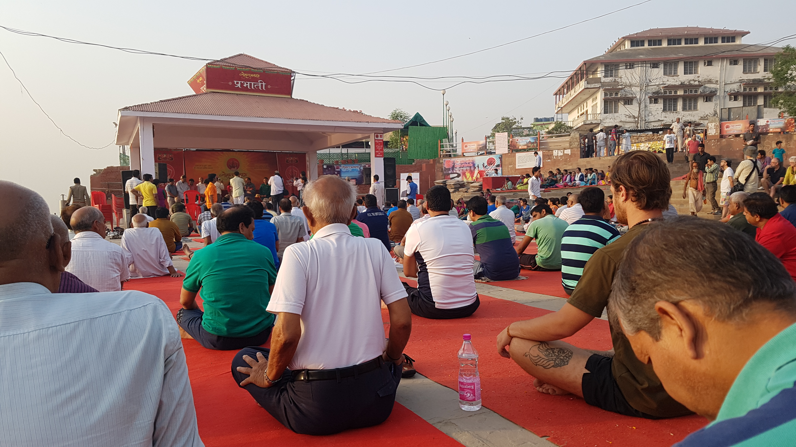

바라나시의 요가
어제 만났던 친구들과 오늘 아침에 같이 요가를 하기로 했다. 바라나시 맨 끝에 위치한 가트인 아씨가트에서 매일 아침 6시에 단체로 요가를 한다고 한다. 그리고 넓은 공터에서 하기 때문에 누구나 다 무료로 참여할수있다고 해서 우리도 같이 참석하기로 했다.
가트길을 따라 가는길 일본인친구와 같이 대화를 하면서 갔다. 중간에 갑자기 정말 인도스러운 음악이 들렸는데 너무 좋게 느껴졌다. 갑자기 내가 진짜 인도에 왔다는 것이 실감이 나기 시작했다. 군대 훈련소에 있을때 행군을 하면서 비슷한 느낌을 받았던적이 있었다. 맨날 생각만 하던 군대에 내가 진짜 와있구나 갑자기 실감이 되는느낌. 그런 감정을 지금 인도에서 처음 느꼈는데 무척 아름다웠다. 그리고 지금까지 이상하게만 느껴졌던 그 인도음악이 점점 좋아질것 같기도 했다. (적어도 오늘 들었던 노래소리는 너무 좋았다.)

약 20분정도 걸어서 요가 장소에 도착했다. 생각보다 많은 사람들이 있었고 우리는 그사이에 자리잡고 앉았다. 약 한시간정도 요가 동작을 따라했는데 아주 흥미로웠던 경험이었다. 인도, 특히 이곳 바라나시에는 정말 즐길거리가 많다. 수 많은 이벤트가 있어서 구경할 거리가 많다. 그런 의식의 문화나 축제나 세레모니가 많은것이 인도의 매력이지 않을까 생각이 들었다. 인도여행을 가리고 있는 더럽고 냄새나고 사람많고 시끄러움이라는 구름을 걷어내면 그 속에있는 참 모습을 발견할 수 있다. 인도는 정말로 독특한 곳이다.
요가를 마치고 다 같이 아침식사를 하러 가는길에 어떤 프랑스 친구를 또 만나게되어 아침 식사를 같이 하게 되었다. 그도 몇개월동안 인도를 여행하는 중이라고 한다. 그리고 지금까지 만난 수많은 사람들이 내 9개월 여행계획을 말해주면 축하해주고 부러워해주고 칭찬해준다. 이렇게 삶을 공유하는것이 즐거운 일이라는 사실도 느끼게 되는것 같다.
한국인 친구 J가 마사지를 받고 싶은데 메인가트를 같이 가자고 해서 나는 구경만 하러 갔다. 막상받아보니 별로다마사지를 나도 받고 싶은데 도데체 어디서 받아야 할까? 그리고 갑자기 이친구가 겐지스강에 들어가고 싶다고 한다. 그러더니 진짜 바로 옷벗고 들어갔다. 여기에 들어가면 수많은 피부질환을 겪에될거라고 가이드북에는 주의사랑으로 적혀있는데 정말 대단한 친구라고 느껴진다. 진짜 인도를 즐기고 있는 친구였다. (J는 황금연휴를 이용해 인도르 짧에 돌고있고 내일 한국으로 귀국한다)
잠시 쉰다음 바지와 MICRO SD카드를 구매했다. 그리고 내일 떠날 기차표도 받았다. 처음 겪게되는 인도의 20시간 장기 기차이동. 과연 어떤일이 펼쳐질지. 또 일기가 한뭉탱이가 나올지 살짝 기대가 되지만 걱정이 더 많이 되는것이 사실이다. 아침에는 4시에 이곳에서 릭샤를 타고 무가살라이로 이동해야한다. 약 40분걸린다고 한다. 그래서 아침에 릭샤도 예약 해놓았다.
우리는 점심시간에 다시 만나서 식사를 했다. 그리고 식사를 마치고 라씨를 먹은뒤 헤어졌다.
유심카드 구매했다. 하루뒤에 통화해서 처리해야할것이 있다는데 진작 할걸 후회가 된다. 내일 아침에는 기차안에 있기때문이다. 기차안에서 인터넷 연결이 안되서 난감한 상황이 몇번있으서 필요해보였다. 진작할걸 떠나기전날 해서 또 기차내에서 못 쓰게생겻다
잠깐누웠는데 졸았다. 바라나시는 겁나 더웠다. 오늘은 마지막 밤이다.
진짜 미친듯이 덥다. 나는 그래도 추위보다는 더위에 강한편이라 에어컨 없는 방에서도 견딜만 했지만 왠만한 사람들은 살기 힘들것 같다. 게다가 내가 있는방이 제일 윗층이라 더덥다.
나는 무척 깔끔을 떠는편이다. 맨발에 뭐가 묻는걸 혐오해서 맨발로 돌아다니지 못한다. 심지어 슬리퍼를 신고 돌아다니면 불편하다. 침대보와 이불도 찝찝해서 침낭속에서만 잔다. 배드벅이 우려되서 침낭밖으로 벗어나는건 생각하기 어렵다. 그러나 장기여행자 대부분은 침낭을 사용하지 않는다. 침낭에서 벗어나는 순간 진짜 여행자가 되는걸까? 나도 언젠간 침낭에서 자유로울수 있을까.